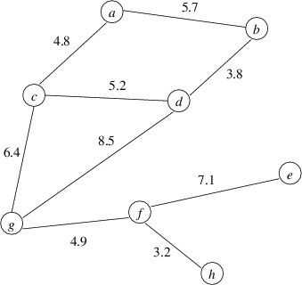
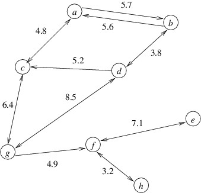

Introduction to Graphs
Introduction to Graphs
There are two kinds of graphs: undirected and directed. An undirected graph consists of:
- a finite set of nodes; and
- a finite set of edges, which are 2-element subsets of the nodes.
The fact that edges are 2-element sets means that the nodes that comprise an edge must be distinct. Furthermore, within a set, there is no notion of a “first” element or a “second” element — there are just two elements. Thus, an edge expresses some symmetric relationship between two nodes; i.e., if $ \\{u, v\\} $ is an edge then node $ u $ is adjacent to node $ v $, and node $ v $ is adjacent to node $ u $. We also might associate some data, such as a label or a length, with an edge.
We can think of an edge as “connecting” the two nodes that comprise it. We can then draw an undirected graph using circles for the nodes and lines connecting two distinct nodes for the edges. Following is an example of an undirected graph with numeric values associated with the edges:

A directed graph is similar to an undirected graph, but the edges are ordered pairs of distinct nodes rather than 2-element sets. Within an ordered pair, there is a first element and a second element. We call the first node of an edge its source and the second node its destination. Thus, an edge in a directed graph expresses an asymmetric relationship between two nodes; i.e., if $ (u, v) $ is an edge, then $ v $ is adjacent to $ u $, but $ u $ is not adjacent to $ v $ unless $ (v, u) $ is also an edge in the graph. As with undirected graphs, we might associate data with an edge in a directed graph.
We can draw directed graphs like we draw undirected graphs, except that we use an arrow to distinguish between the source and the destination of an edge. Specifically, the arrows point from the source to the destination. If we have edges $ (u, v) $ and $ (v, u) $, and if these edges have the same data associated with them, we might simplify the drawing by using a single line with arrows in both directions. Following is an example of a directed graph with numeric values associated with the edges:

This DLL contains the definition of a namespace Ksu.Cis300.Graphs containing a class DirectedGraph<TNode, TEdgeData> and a structure Edge<TNode, TEdgeData>. The class DirectedGraph<TNode, TEdgeData> implements a directed graph whose nodes are of type TNode, which must be a type suitable for hashing. The edges each store a data item of type TEdgeData, which may be any type. These edges can be represented using instances of the Edge<TNode, TEdgeData> structure. We also can use the DirectedGraph<TNode, TEdgeData> class to represent undirected graphs — we simply make sure that whenever there is an edge $ (u, v) $, there is also an edge $ (v, u) $ containing the same data.
The Edge<TNode, TEdgeData> structure contains the following public members:
- Edge(TNode source, TNode dest, TEdgeData data): This constructor constructs an edge leading from source to dest and having data as its data item.
- TNode Source: This property gets the source node for the edge.
- TNode Destination: This property gets the destination node for the edge.
- TEdgeData Data: This property gets the data associated with the edge.
Note that because no public members change the structure, it is immutable.
The DirectedGraph<TNode, TEdgeData> class contains the following public members:
- DirectedGraph(): This constructor constructs a directed graph with no nodes or edges.
- void AddNode(TNode node): This method adds the given node to the
graph. If this node already is in the graph, it throws an
ArgumentException. If
nodeis null, it throws an ArgumentNullException. - void AddEdge(TNode source, TNode dest, TEdgeData value): This
method adds a new edge from
sourcetodest, withvalueas its associated value. If eithersourceordestis not already in the graph, it is automatically added. Ifsourceanddestare the same node, or if there is already an edge fromsourcetodest, it throws an ArgumentException. If eithersourceordestis null, it throws an ArgumentNullException. - bool TryGetEdge(TNode source, TNode dest, out TEdgeData value):
This method tries to get the value associated with the edge from
sourcetodest. If this edge exists, it setsvalueto the value associated with this edge and returns true; otherwise, it setsvalueto the default value for the TEdge type and returns false. - int NodeCount: This property gets the number of nodes in the graph.
- int EdgeCount: This property gets the number of edges in the graph.
- bool ContainsNode(TNode node): This method returns whether the
graph contains the given node. If
nodeis null, it throws an ArgumentNullException. - bool ContainsEdge(TNode source, TNode dest): This method returns
whether the graph contains an edge from
sourcetodest. - IEnumerable<TNode> Nodes: This property gets an enumerable collection of the nodes in the graph.
- IEnumerable<Edge<TNode, TEdgeData>> OutgoingEdges(TNode
source): This method gets an enumerable collection of the outgoing
edges from the given node. If
sourceis not a node in the graph, it throws an ArgumentException. Ifsourceis null, it throws an ArgumentNullException. Otherwise, each edge in the collection returned is represented by an Edge<TNode, TEdgeData>
This implementation is somewhat limited in its utility, as nodes or edges cannot be removed, and values associated with edges cannot be changed. However, it will be sufficient for our purposes. We will examine its implementation details in a later section. For now, we will examine how it can be used.
Building a graph is straightforward using the constructor and the AddNode and/or AddEdge methods. Note that because the AddEdge method will automatically add given nodes that are not already in the graph, the AddNode method is only needed when we need to add a node that may have no incoming or outgoing edges.
For many graph algorithms, we need to process all of the edges in some way. Often the order in which we process them is important, but not in all cases. If we simply need to process all of the edges in some order we can use foreach loops with the last two properties listed above to accomplish this:
- For each node in the graph:
- For each outgoing edge from that node:
- Process this edge.
- For each outgoing edge from that node: